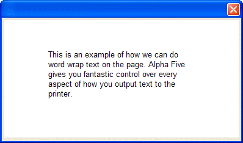
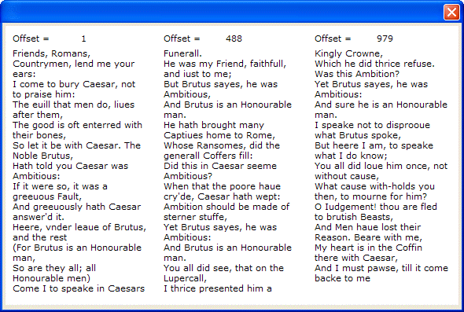

DRAW_WRAP_TEXT()
Syntax
New_Offset as N = DRAW_WRAP_TEXT( Text as C, Xpos as N, Ypos as N, Width as N, Height as N [, Offset as N ] )
Argument | Description |
New_Offset | The character position just after the end of the displayed text. |
Text | The text to write. |
Xpos | The horizontal coordinate of the upper left corner of the bounding box. |
Ypos | The vertical coordinate of the upper left corner of the bounding box. |
Width | The width of the bounding box. |
Height | The height of the bounding box. |
Offset | The position of the text relative to the beginning of the left margin. Must be greater than or equal to 1. The first character on the line has Offset = 1. |
Description
DRAW_WRAP_TEXT() draws word wrapped text onto a bitmap.


Limitations
Used in the Code section of UI_BITMAP_DRAW(), UI_SCREEN_DRAW(), and UI_PRINTER_DRAW().
Examples
ui_bitmap_create("test", 4, 2) word_wrap_text = <<%a% This is an example of how we can do word wrap text on the page. Alpha Five gives you fantastic control over every aspect of how you output text to the printer. %a% ui_bitmap_draw("test",<<%code% inner_Rect(0, 0, 4, 2) set_font("arial,10", "black", "white") offset = draw_wrap_text(word_wrap_text, .75, .5, 2.5, 1, 1) %code%) ui_dlg_box("","{image=test}") |
ui_bitmap_create("test",6.0, 3.7) text = <<%str% Friends, Romans, Countrymen, lend me your ears: I come to bury Caesar, not to praise him: The euill that men do, liues after them, The good is oft enterred with their bones, So let it be with Caesar. The Noble Brutus, Hath told you Caesar was Ambitious: If it were so, it was a greeuous Fault, And greeuously hath Caesar answer'd it. Heere, vnder leaue of Brutus, and the rest (For Brutus is an Honourable man, So are they all; all Honourable men) Come I to speake in Caesars Funerall. He was my Friend, faithfull, and iust to me; But Brutus sayes, he was Ambitious, And Brutus is an Honourable man. He hath brought many Captiues home to Rome, Whose Ransomes, did the generall Coffers fill: Did this in Caesar seeme Ambitious? When that the poore haue cry'de, Caesar hath wept: Ambition should be made of sterner stuffe, Yet Brutus sayes, he was Ambitious: And Brutus is an Honourable man. You all did see, that on the Lupercall, I thrice presented him a Kingly Crowne, Which he did thrice refuse. Was this Ambition? Yet Brutus sayes, he was Ambitious: And sure he is an Honourable man. I speake not to disprooue what Brutus spoke, But heere I am, to speake what I do know; You all did loue him once, not without cause, What cause with-holds you then, to mourne for him? O Iudgement! thou are fled to brutish Beasts, And Men haue lost their Reason. Beare with me, My heart is in the Coffin there with Caesar, And I must pawse, till it come backe to me %str% ui_bitmap_create("test",6.0,3.7) ui_bitmap_draw("test",<<%code% set_font("Verdana,8") offset = 1 inner_rect(0, 0, 6.0, 3.7) for i = 0 to 3 text("Offset = " + str(offset), i*2+.1, 0.1) offset = draw_wrap_text(text, i*2+.1, 0.3, 1.8, 3.3, offset) next %code%) ui_dlg_box("","{image=test}") |
See Also